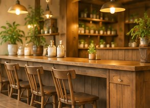
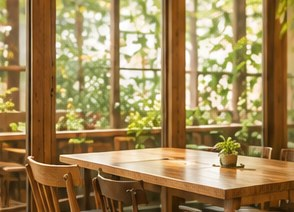
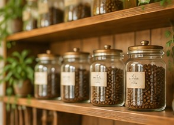

ごあいさつ
緑に囲まれた小さなお店です。
ゆっくりと流れる時間を、一杯のコーヒーと一緒にお楽しみください。
店内のようす



店舗情報
| 営業時間 | 平日 9:00 – 19:00 土日祝 8:00 – 20:00 |
|---|---|
| 定休日 | 火曜日 |
| 住所 | 愛知県岡崎市緑町1-2-3 |
| 駐車場 | あり |
 こもれび珈琲
こもれび珈琲木漏れ日の中の、小さな喫茶店。
緑に囲まれた小さなお店です。
ゆっくりと流れる時間を、一杯のコーヒーと一緒にお楽しみください。



| 営業時間 | 平日 9:00 – 19:00 土日祝 8:00 – 20:00 |
|---|---|
| 定休日 | 火曜日 |
| 住所 | 愛知県岡崎市緑町1-2-3 |
| 駐車場 | あり |
こもれび珈琲